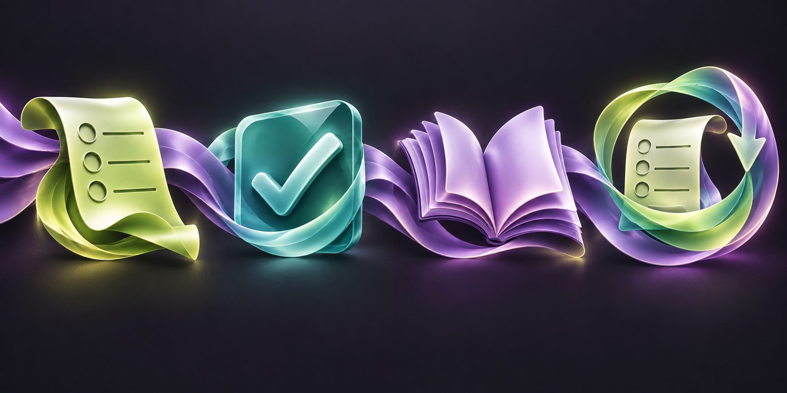
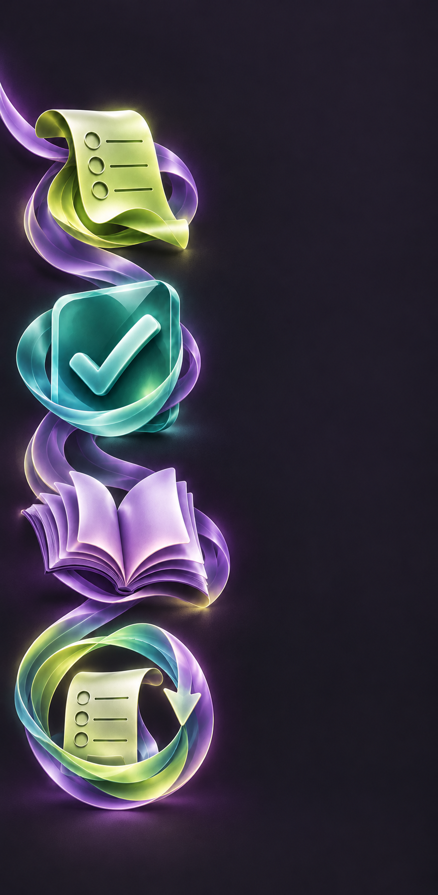

Каждый ответ становится уроком
1. Ответ
Черновик можно изменить
2. Проверка
Ответ фиксируется
3. Разбор
Причина и источники
4. Повторение
Ошибки и пропуски
Повторение создаёт новую попытку


Черновик можно изменить
Ответ фиксируется
Причина и источники
Ошибки и пропуски
Повторение создаёт новую попытку